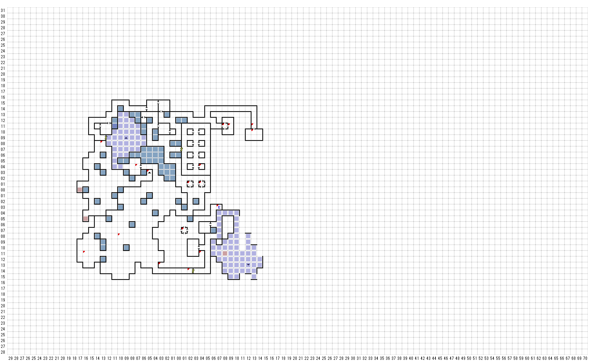

【 西：16，南：11 】
小さな、黒いひきがえると、いぼのある 生き物が、
汚い、臭いのする水たまりの中でうごめいている。
【 西：13，北：8 】
モーターを外す手順を間違えるとここに飛ばされる
【 西：10，南：8 】
君は大きな洞窟の真ん中に立たっている。
そして、床には、不思議な暗号の
ような印が刻まれている。
*--- + : ! ====
'--- : ; '/ ----
【 西：7，北：4 】
魔術師に通せんぼされる
GIVE
BOTTOLE OF RUM
【 西：5，北：3 】
上からのロープ
使いますか？
上へ（E9N5）
【 西：3，南：13 】
そこには、ほこりと、クモの巣に覆われた、
かなり古そうな大きな木箱がある。
捜しますか（Y/N）
キーー君は木箱をこじ開けた
アイテム入手（bottle）
>BOTTLE OF RUM
【 東：1，南：7 】
B1Fの から門をくぐって来られる
（USE Bag of TOKEN）
【 東：2，北：1 】
暗闇の中で声が響いてきた。
LOONを探すなら、墓場を探せ
破滅を見たくないなら部屋を探せ！
【 東：2，南：14 】
君は重そうな鎖で固く閉じられた扉の前に立っている。
PIC:LV10でダメ
DISTO:ダメ
USE HACKSAW
まったく！こいつは重労働だぜ！
君は鎖を切断した！
【 東：4，北：4 】
Inspect Search hidden item
隠されていた小部屋が現れた。
捜しますか？
strange item
HACKSAW
【 東：4，北：1 】
宝箱
「立ち去れ」
消える
【 東：4，南：11 】
そこには次のように書いてある。
HURKLE BEASTに、餌をやらないでください！
【 東：7，南：3 】
文字のついたボタンがある
（A）から（D）のどれを押してみますか？
*AがB2Fのエレベーター
【 東：8，北：11 】
あふれる泉の横に、質素な聖堂が、静かに
建っている。そしてその聖堂に かかった
額には、次のように書かれている。
BUBBAの健康温泉
誰が潜る？
回復するけど寝る。
【 東：9，北：11 】
がー、がー！
スパークのアヒル
例コンサルタント、ご用はいつでも承ります。
ガー！コンサルト量は500G.P.です。
500G.P.かかります。
支払いますか
ガー！もし厄介な例から免れたい
なら、スライムｔｐ、ゼリーをミックス
して、そいつをミミズに加えなさい。
あれ、イモリだったかな？
ガー！ちょっと待てよ・・・
【 東：13，北：11 】
YE
DRAGON’S
FLAGON
＜酒と食事の店＞
【 東：13，北：10 】
NPC
反応なし